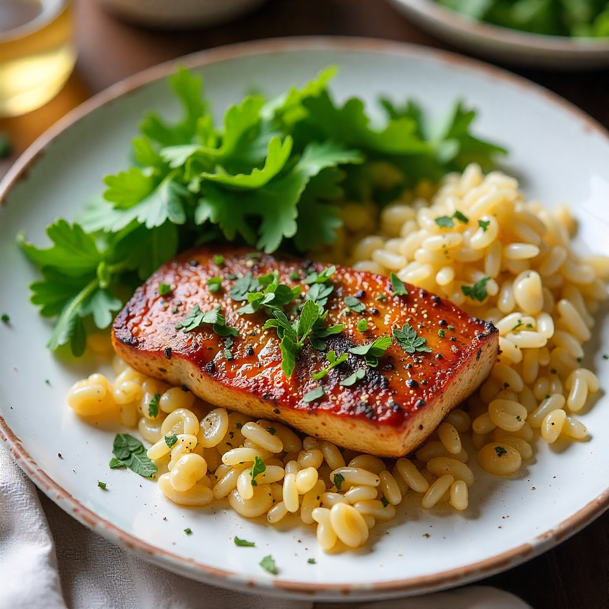
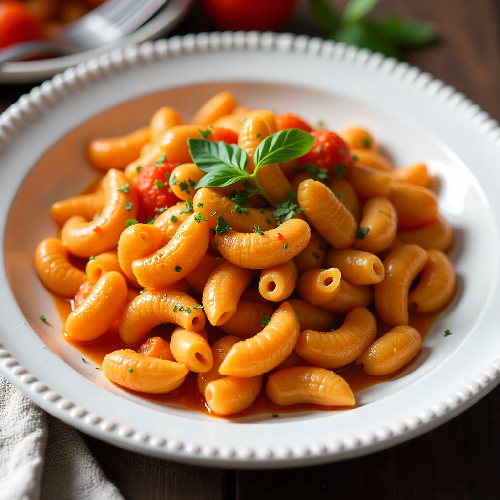
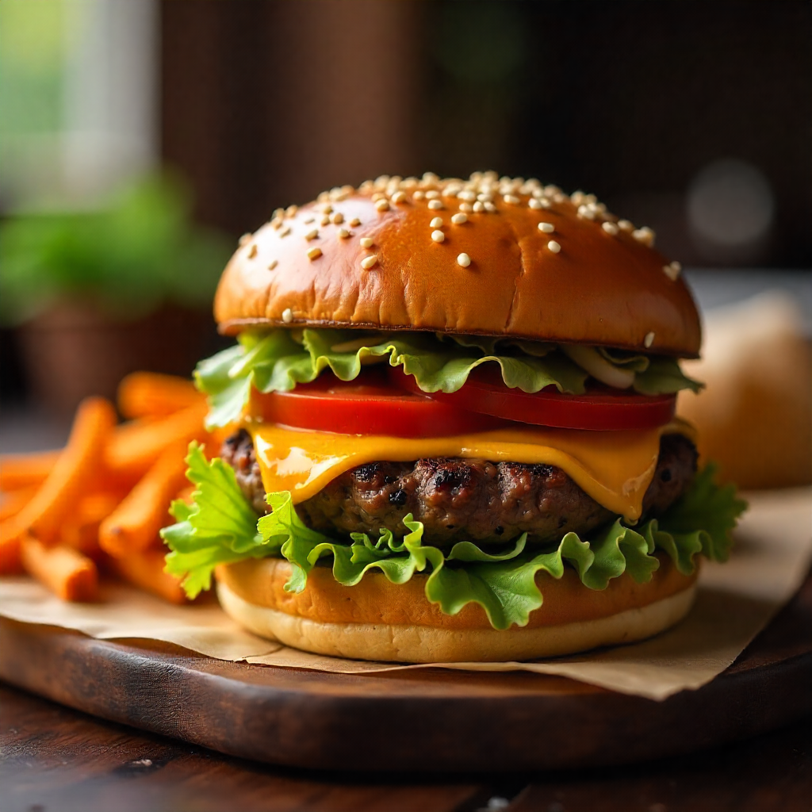

Cardápio semanal prático e nutritivo
Segunda-feira:
Almoço - Frango grelhado com salada de folhas verdes, arroz integral e feijão.
Jantar - Omelete com legumes e queijo, acompanhado de salada.
Terça-feira:
Almoço - Peixe assado com batatas e legumes, arroz branco.
Jantar - Sopa de legumes com carne desfiada.
Quarta-feira:
Almoço: Salada de grão de bico com atum, tomate e pepino, acompanhada de pão integral.
Jantar: Macarrão integral com molho de tomate caseiro e carne moída.
Quinta-feira:
Almoço - Frango com purê de batata doce e salada de brócolis.
Jantar - Pizza integral caseira com legumes e queijo.
Sexta-feira:
Almoço - Feijoada leve com arroz e couve refogada.
Jantar - Lanche natural com pão integral, frango desfiado, alface, tomate e cenoura ralada.
Sábado:
Almoço - Churrasco com saladas diversas e pão de alho.
Jantar - Hambúrguer caseiro com batata doce assada e salada.
Domingo:
Almoço: Lasanha de legumes com molho branco e carne moída.
Jantar: Sopa de legumes com carne cozida e temperos frescos.
Dicas extras:
Use temperos naturais para dar sabor aos pratos, como coentro, salsa, orégano, tomilho e manjericão.
Beba bastante água ao longo do dia.
Consuma frutas frescas como lanches intermediários para evitar a fome e aumentar a ingestão de vitaminas e minerais.
Experimente adicionar sementes e castanhas às refeições para aumentar a ingestão de nutrientes.
Se você não tiver tempo para cozinhar todos os dias, prepare algumas porções maiores e congele para usar em outras refeições.